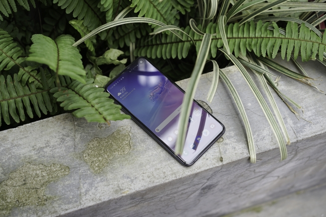
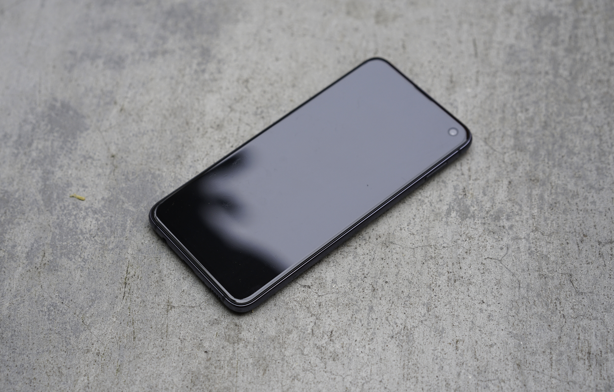
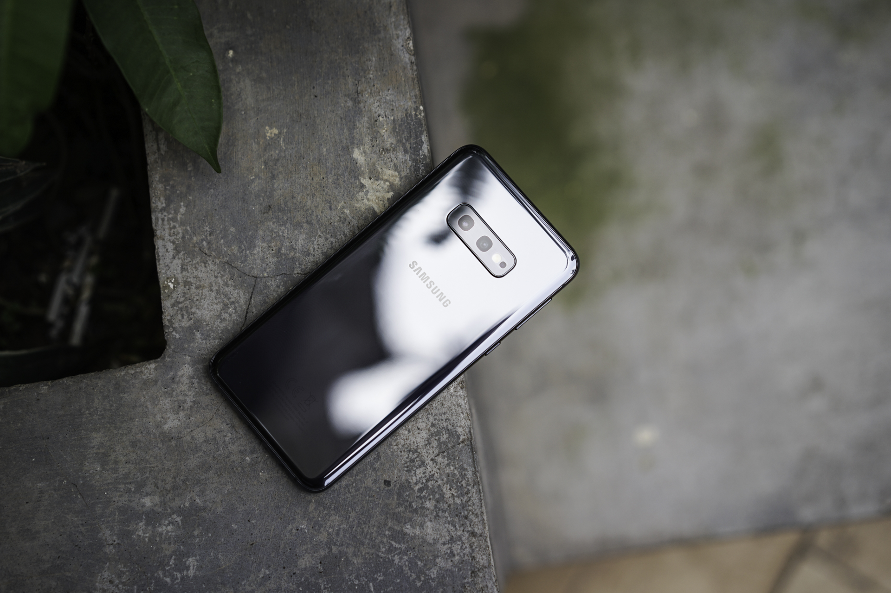
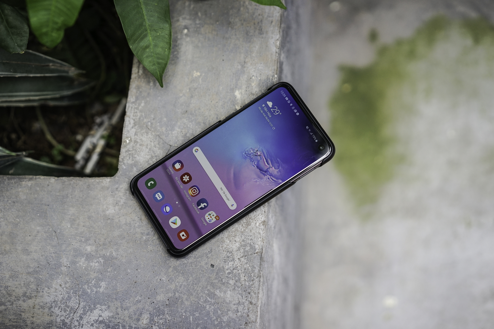

Đánh giá chi tiết Samsung Galaxy S10e: Nhỏ nhưng tinh thông võ nghệ!
-

Cũng từ rất lâu rồi, sau cuộc chạy đua về cấu hình và kích thước màn hình, một chiếc smartphone
nhỏ gọn nhưng hội tụ đủ những công nghệ đỉnh cao mới xuất hiện. Đó chính là Samsung Galaxy S10e.
Chiến lược kinh doanh của Samsung trong năm thứ 10 phát triển dòng smartphone Galaxy thật đặc
biệt.
Không chỉ có 2 biến thể Galaxy S10, Samsung còn bổ sung thêm một thiết bị nhỏ gọn hơn, mang
trong
mình những công nghệ tốt nhất nhằm phục vụ cho nhu cầu ngày càng đa dạng của người dùng. Không
phải
ai cũng có bàn tay đủ lớn để cầm chiếc Galaxy S10+ hay không phải ai cũng có đủ tiền để sở hữu
Galaxy S10, đáp ứng được cả hai thắc đó, Samsung đã đưa ra Galaxy S10e – siêu phẩm nhỏ gọn giữa
những gã khổng lồ của phân khúc cao cấp. Sau 10 ngày trải nghiệm, người viết cần phải khẳng định
Galaxy S10e là smartphone cao cấp đáng mua nhất hiện nay và bạn sẽ trải nghiệm được sự khác biệt
ngay trong lòng bàn tay.
Thiết kế nhỏ, gọn nhưng tinh tế và sang trọng
Không ít các sản phẩm được coi là smartphone cao cấp, giá rẻ hay siêu phẩm nhỏ gọn nhưng được
các hãng rút gọn một cách “thái quá” để đảm bảo lợi nhuận cũng như một phần nào đó là chiêu trò
quảng cáo. Tuy nhiên, với Samsung, Galaxy S10e là minh chứng rõ rệt cho việc chăm sóc, thấu hiểu
khách hàng sau 10 năm phát triển smartphone. Hơn ai hết, Samsung hiểu rằng, smartphone cao cấp
của hãng ngày càng trở nên quá khổ với lòng bàn tay của phần đông những người dùng trên toàn cầu
phần bởi xu hướng, phần là nâng cao trải nghiệm. Dù có đạt công nghệ cao đến đâu, màn hình vô
cực, màn hình Infinity-O, Infinity-V hay giọt nước nhưng cuộc chạy đua về kích thước đường chéo
vẫn chưa dừng lại. Bởi vậy, ngoài việc nâng cấp liên tục các sản phẩm chính, Samsung cần đưa
thêm một thiết bị nhỏ hơn, rẻ hơn những vẫn phải có những trải nghiệm cao cấp và thành quả ban
đầu là chiếc Galaxy S10e.

Galaxy S10e là smartphone có kích thước màn hình nhỏ nhất trong bộ ba Galaxy S10 với 5.8 inches,
mặt trước được làm phẳng hoàn toàn giợi nhớ về những chiếc Galaxy S6, Galaxy S7 trước đây. Các
cạnh viền được làm mỏng tối đa để đem lại kích thước nhỏ nhất có thể cho thiết bị. Đồng thời, sự
liền mạch giữa mặt lưng, cạnh viền và mặt trước được Samsung đặc biệt chú trọng tạo nên một sản
phẩm bóng bảy, đồng bộ, tinh tế và sang trọng với tông màu đen ánh bạc huyền ảo. Đáng tiếc, tại
Việt Nam, Galaxy S10e chỉ được công bố với màu đen và thiếu đi những màu sắc trẻ trung, hiện
đại.

Khung nhôm của Galaxy S10e được nhân đôi về thiết diện, nằm giữa hai tấm kính cường lực bền bỉ.
Mặt kính hiển thị phẳng, trong khi mặt sau được uốn cong tinh tế để mang lại cảm giác cầm nắm
thoải mái. Ở phía dưới, Samsung không hề hy sinh đi jack cắm tai nghe 3.5mm mà thay vào đó tối
ưu độ mỏng cho máy dựa việc hiện diện của kết nối này, mang tới trải nghiệm tai nghe linh hoạt
cho người dùng. Galaxy S10e không “rẻ tiền” như tên gọi, đây là thiết bị hàng đầu của Samsung,
chỉ có điều là nó nhỏ hơn mà thôi.
Bỏ túi không gian giải trí cực kỳ nhỏ gọn với màn hình Infinity-O
Màn hình Dynamic AMOLED 5.8 inches của Galaxy S10e không thể sắc nét như những người đàn anh
nhưng với kích thước nhỏ, ở khoảng cách thông thường, trải nghiệm người dùng vẫn được giữ
nguyên. Màn hình này chỉ cắt giảm độ phân giải, những khía cạnh khác như góc nhìn rộng, tấm nền
cao cấp vẫn được giữ nguyên.

Với độ sáng tối đa đạt 603 nits, Galaxy S10e dễ dàng vượt qua tất cả những mẫu smartphone cao
cấp tương đương như Google Pixels 3, ngang ngửa với Galaxy S9 và iPhone XS. Điều này giúp mẫu
smartphone nhỏ bé trở nên hoàn hảo ở ngoài trời, nơi có ánh sáng mạnh chiếu vào.
Galaxy S10e có hai cài đặt màu bao gồm tự nhiên và dynamic, hai cài đặt này cho không gian màu
khác nhau tùy theo nhu cầu của người sử dụng. Ở chế độ dynamic, Galaxy S10e được mở rộng về
không gian màu sRGB cơ bản và tiệm cận với chuẩn DCI-P3 đang thông rụng ở các rạp chiếu phim.
Màn hình Galaxy S10e có thể đạt tới 148% dải màu sRGB, vượt hơn con số 123% của iPhone XS và dù
ở bất kỳ chế độ nào, màn hình này cũng được cung cấp chuẩn HDR10+ cho độ tương phản và khả năng
hiển thị tuyệt vời. Màu đen sâu, độ tương phản tốt, màu sắc rực rỡ giúp Galaxy S10e vượt qua các
đối thủ cùng tầm giá.
“Bé” nhưng hiệu năng khổng lồ
Từng có một nhà sản xuất đã tạo ra những smartphone compact với cấu hình mạnh nhất ở thời điểm
ra mắt và với việc đảm bảo trải nghiệm của người dùng, Samsung cũng làm điều tương tự. Galaxy
S10e tại Việt Nam sở hữu con chip Exynos 9820 được xây dựng trên tiến trình 8nm, 6GB RAM và bộ
nhớ trong 128GB đi kèm màn hình độ phân giải Full HD+. Đây là cấu hình mạnh nhất của Samsung ở
thị trường châu Á và trải nghiệm chơi game hay các tác vụ nặng trên Galaxy S10e thực sự tuyệt
vời.